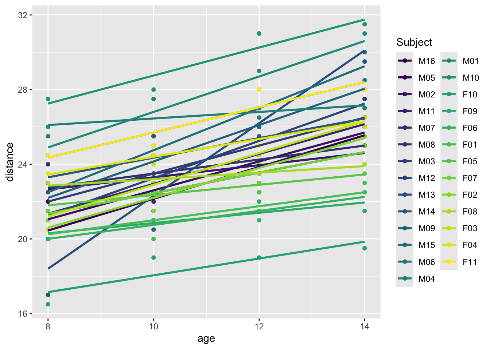
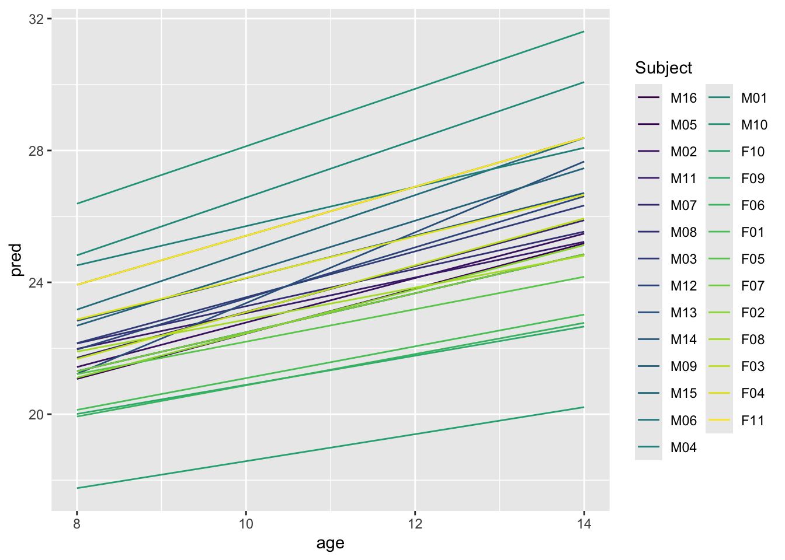

Linear Mixed-Effects Models for Longitudinal Data Analysis
Author
Your Name
Introduction to Longitudinal Data
Welcome to this tutorial on linear mixed-effects models (LMM) for longitudinal data analyses! Longitudinal data involves repeated measurements over time from the same individuals, making it essential to use models that account for correlations within subjects.
In this tutorial, we’ll cover everything you need to know about LMMs: from understanding their basic structure to fitting and interpreting them in R using the lme4 package. Whether you’re a beginner or have some experience with modeling, you’ll find examples and exercises to help you along the way.
Let’s dive in!
What is Longitudinal Data?
Longitudinal data tracks the same subjects over time. For example, you might record the height of children annually as they grow, which leads to repeated measures for each child.
Why Use Mixed-Effects Models?
Traditional regression models fail to account for the fact that repeated measurements within individuals are correlated. This is where linear mixed-effects models (LMMs) come in handy, as they allow us to model both fixed effects (population-wide parameters) and random effects (subject-specific deviations).
To visualize this, consider the following dataset of children’s growth over time:
Now, let’s go over some of the key concepts behind linear mixed-effects models.
Fixed vs. Random Effects
Fixed effects represent population-wide parameters. For example, you might find that, on average, all children in your study grow by 2 cm each year.
Random effects capture individual-specific variations. One child might grow faster than another, and mixed-effects models allow each child to have their own growth trajectory.
Hierarchical Structure of LMMs
Linear mixed-effects models are hierarchical, meaning they allow for data that is nested. In our example, measurements are nested within individuals (e.g., repeated height measurements for each child).
Where: - ( y_{ij} ): response variable (e.g., height for child ( i ) at time ( j )) - ( eta_0 ), ( eta_1 ): fixed effects (intercept and slope) - ( u_{0i} ): random intercept (individual-specific) - ( _{ij} ): residual error
Preparing Data in R
Before fitting an LMM, it’s crucial to ensure your data is properly formatted. Longitudinal data should generally be in long format, where each row corresponds to an observation at a specific time point for an individual.
Let’s reshape a dataset if needed.
# Reshaping data into long formatlong_data<-Orthodont%>%gather(key ="time", value ="height", distance)head(long_data)
Handling Missing Data
Longitudinal data often have missing values. You can use functions like na.omit() to drop missing data or more sophisticated methods like multiple imputation using the mice package.
Now, let’s fit our first model! We’ll start by fitting a random intercept model, where each individual gets their own baseline (intercept).
# Random intercept modelmodel1<-lmer(distance~age+(1|Subject), data =Orthodont)# Display model summary to examine fixed and random effectssummary(model1)
Linear mixed model fit by REML ['lmerMod']
Formula: distance ~ age + (1 | Subject)
Data: Orthodont
REML criterion at convergence: 447
Scaled residuals:
Min 1Q Median 3Q Max
-3.6645 -0.5351 -0.0129 0.4874 3.7218
Random effects:
Groups Name Variance Std.Dev.
Subject (Intercept) 4.472 2.115
Residual 2.049 1.432
Number of obs: 108, groups: Subject, 27
Fixed effects:
Estimate Std. Error t value
(Intercept) 16.76111 0.80240 20.89
age 0.66019 0.06161 10.72
Correlation of Fixed Effects:
(Intr)
age -0.845
Model Interpretation
In the output, the fixed effects provide the population-wide average relationship between the predictors (e.g., age) and the response variable (e.g., height). The random effects show how much individual subjects deviate from this average.
Adding Random Slopes
You can also allow for random slopes, meaning that individuals can differ not only in their intercepts (baselines) but also in their trajectories (slopes).
# Random intercept and slope modelmodel2<-lmer(distance~age+(age|Subject), data =Orthodont)summary(model2)
Linear mixed model fit by REML ['lmerMod']
Formula: distance ~ age + (age | Subject)
Data: Orthodont
REML criterion at convergence: 442.6
Scaled residuals:
Min 1Q Median 3Q Max
-3.2229 -0.4938 0.0073 0.4721 3.9161
Random effects:
Groups Name Variance Std.Dev. Corr
Subject (Intercept) 5.41660 2.3274
age 0.05128 0.2264 -0.61
Residual 1.71616 1.3100
Number of obs: 108, groups: Subject, 27
Fixed effects:
Estimate Std. Error t value
(Intercept) 16.76111 0.77528 21.620
age 0.66019 0.07126 9.265
Correlation of Fixed Effects:
(Intr)
age -0.848
Now, each child has their own growth rate!
Model Diagnostics and Interpretation
Once we’ve fitted our models, we need to assess how well they fit the data.
Model Fit: AIC, BIC, and Likelihood Ratio Tests
One way to assess model fit is by comparing models using AIC (Akaike Information Criterion) or BIC (Bayesian Information Criterion). A lower AIC or BIC indicates a better model fit.
If the residuals are roughly normally distributed and homoscedastic, you’re in good shape!
Examples of Longitudinal Analyses
Let’s now explore a full example of longitudinal data analysis with a growth curve model.
Growth Curve Model Example
We’ll use the Orthodont dataset and model children’s growth trajectories over time, accounting for both fixed effects (age) and random effects (individual deviations).
# Fit growth curve modelgrowth_model<-lmer(distance~age+(1+age|Subject), data =Orthodont)summary(growth_model)
Linear mixed model fit by REML ['lmerMod']
Formula: distance ~ age + (1 + age | Subject)
Data: Orthodont
REML criterion at convergence: 442.6
Scaled residuals:
Min 1Q Median 3Q Max
-3.2229 -0.4938 0.0073 0.4721 3.9161
Random effects:
Groups Name Variance Std.Dev. Corr
Subject (Intercept) 5.41660 2.3274
age 0.05128 0.2264 -0.61
Residual 1.71616 1.3100
Number of obs: 108, groups: Subject, 27
Fixed effects:
Estimate Std. Error t value
(Intercept) 16.76111 0.77528 21.620
age 0.66019 0.07126 9.265
Correlation of Fixed Effects:
(Intr)
age -0.848
Visualization
Visualizing both the raw data and the fitted model is key for understanding your results.
Plotting Raw Data
Use ggplot2 to visualize the data points and individual growth trajectories.
# Plot raw dataggplot(Orthodont, aes(x =age, y =distance, color =Subject))+geom_point()+geom_smooth(method ="lm", se =FALSE)
`geom_smooth()` using formula = 'y ~ x'

Plotting Predicted Values
Next, plot the predicted growth curves for each individual based on the model:
# Plot predicted valuesOrthodont$pred<-predict(growth_model)ggplot(Orthodont, aes(x =age, y =pred, color =Subject))+geom_line()

Advanced Topics (Optional)
Nested Models and Cross-Classified Models
In more complex cases, you might have individuals nested within larger groups (e.g., students within schools). LMMs can handle this by including random effects at multiple levels.
Generalized LMMs (GLMMs)
For non-continuous outcomes (e.g., binary or count data), you can use generalized linear mixed-effects models (GLMMs) with the glmer() function.
# Load necessary library and datasetlibrary(lme4)# View the sleepstudy datasetdata("sleepstudy")head(sleepstudy)
# Create a binary outcome: 1 if reaction time is above 300, 0 otherwisesleepstudy$binary_reaction<-ifelse(sleepstudy$Reaction>300, 1, 0)# Fit a GLMM with binary outcome (binary_reaction)# Random intercept for Subject, and Days as a predictorglmm_model<-glmer(binary_reaction~Days+(1|Subject), data =sleepstudy, family =binomial)# Display the model summarysummary(glmm_model)
Generalized linear mixed model fit by maximum likelihood (Laplace
Approximation) [glmerMod]
Family: binomial ( logit )
Formula: binary_reaction ~ Days + (1 | Subject)
Data: sleepstudy
AIC BIC logLik deviance df.resid
180.3 189.9 -87.2 174.3 177
Scaled residuals:
Min 1Q Median 3Q Max
-4.6409 -0.4577 -0.1364 0.4941 3.9223
Random effects:
Groups Name Variance Std.Dev.
Subject (Intercept) 3.012 1.735
Number of obs: 180, groups: Subject, 18
Fixed effects:
Estimate Std. Error z value Pr(>|z|)
(Intercept) -3.19546 0.68540 -4.662 3.13e-06 ***
Days 0.58523 0.09806 5.968 2.40e-09 ***
---
Signif. codes: 0 '***' 0.001 '**' 0.01 '*' 0.05 '.' 0.1 ' ' 1
Correlation of Fixed Effects:
(Intr)
Days -0.733
Exercises
Exercise 1: Random Intercept Model
Use a new dataset and fit a random intercept model. Interpret the fixed and random effects.
# Load necessary librarieslibrary(lme4)library(readr)# raw URL from your GitHub Gistgist_url<-"https://gist.githubusercontent.com/swhawes/83345cfbf7f42b26d6922590594311f1/raw/a091b25e9d45d4d72a25705c8a2604292895ed11/longitudinal_dataset.csv"# Read the dataset from GitHub Gist with the correct delimiter (tab)longitudinal_data<-read_delim(gist_url, delim ="\t")
Rows: 4000 Columns: 15
── Column specification ────────────────────────────────────────────────────────
Delimiter: "\t"
chr (4): Gender, Education, HealthStatus, Group
dbl (11): ParticipantID, Wave, Age, CogTestScore, StressLevel, EmploymentSta...
ℹ Use `spec()` to retrieve the full column specification for this data.
ℹ Specify the column types or set `show_col_types = FALSE` to quiet this message.
# View the first few rows of the dataset to ensure it's read correctlyhead(longitudinal_data)
# ------------------ Example Analyses ------------------# Example 1: Linear Mixed Effects Model (Growth Curve Modeling for Cognitive Score)growth_curve_model<-lmer(CogTestScore~Wave+(1|ParticipantID), data =longitudinal_data)summary(growth_curve_model)
Linear mixed model fit by REML ['lmerMod']
Formula: CogTestScore ~ Wave + (1 | ParticipantID)
Data: longitudinal_data
REML criterion at convergence: 28360.5
Scaled residuals:
Min 1Q Median 3Q Max
-4.3637 -0.5177 -0.0163 0.4978 3.5032
Random effects:
Groups Name Variance Std.Dev.
ParticipantID (Intercept) 232.60 15.251
Residual 29.38 5.421
Number of obs: 4000, groups: ParticipantID, 1000
Fixed effects:
Estimate Std. Error t value
(Intercept) 97.80993 0.52600 185.95
Wave 1.98292 0.07666 25.87
Correlation of Fixed Effects:
(Intr)
Wave -0.364
Exercise 2: Compare Random Intercept vs. Random Slope
Fit both a random intercept model and a random slope model. Compare their AIC values and interpret the results.
# Load necessary librarieslibrary(lme4)library(readr)# raw URL from your GitHub Gist (ensure this is the tab-delimited dataset)gist_url<-"https://gist.githubusercontent.com/swhawes/83345cfbf7f42b26d6922590594311f1/raw/a091b25e9d45d4d72a25705c8a2604292895ed11/longitudinal_dataset.csv"# Read the dataset from GitHub Gist with the correct delimiter (tab)longitudinal_data<-read_delim(gist_url, delim ="\t")
Rows: 4000 Columns: 15
── Column specification ────────────────────────────────────────────────────────
Delimiter: "\t"
chr (4): Gender, Education, HealthStatus, Group
dbl (11): ParticipantID, Wave, Age, CogTestScore, StressLevel, EmploymentSta...
ℹ Use `spec()` to retrieve the full column specification for this data.
ℹ Specify the column types or set `show_col_types = FALSE` to quiet this message.
# ------------------ Exercise 2: Compare Random Intercept vs. Random Slope ------------------# Fit a random intercept model (each participant has their own intercept)random_intercept_model<-lmer(CogTestScore~Wave+(1|ParticipantID), data =longitudinal_data)# Fit a random slope model (each participant has their own intercept and slope for Wave)random_slope_model<-lmer(CogTestScore~Wave+(Wave|ParticipantID), data =longitudinal_data)# Compare the AIC values of both modelsaic_comparison<-AIC(random_intercept_model, random_slope_model)# Display the AIC comparisonprint(aic_comparison)
# Display the model summaries for interpretationsummary(random_intercept_model)
Linear mixed model fit by REML ['lmerMod']
Formula: CogTestScore ~ Wave + (1 | ParticipantID)
Data: longitudinal_data
REML criterion at convergence: 28360.5
Scaled residuals:
Min 1Q Median 3Q Max
-4.3637 -0.5177 -0.0163 0.4978 3.5032
Random effects:
Groups Name Variance Std.Dev.
ParticipantID (Intercept) 232.60 15.251
Residual 29.38 5.421
Number of obs: 4000, groups: ParticipantID, 1000
Fixed effects:
Estimate Std. Error t value
(Intercept) 97.80993 0.52600 185.95
Wave 1.98292 0.07666 25.87
Correlation of Fixed Effects:
(Intr)
Wave -0.364
Linear mixed model fit by REML ['lmerMod']
Formula: CogTestScore ~ Wave + (Wave | ParticipantID)
Data: longitudinal_data
REML criterion at convergence: 28296
Scaled residuals:
Min 1Q Median 3Q Max
-4.2092 -0.4826 -0.0156 0.4657 3.0998
Random effects:
Groups Name Variance Std.Dev. Corr
ParticipantID (Intercept) 209.869 14.487
Wave 1.947 1.395 0.11
Residual 26.142 5.113
Number of obs: 4000, groups: ParticipantID, 1000
Fixed effects:
Estimate Std. Error t value
(Intercept) 97.80993 0.49908 195.98
Wave 1.98292 0.08471 23.41
Correlation of Fixed Effects:
(Intr)
Wave -0.255
Conclusion
Congratulations on completing this tutorial! You’ve learned how to fit and interpret linear mixed-effects models for longitudinal data, assess model fit, and visualize the results.
For more advanced topics, continue exploring nested models, GLMMs, and more complex structures as you build confidence with LMMs. Keep practicing, and don’t hesitate to refer back to this guide as you progress.
Happy modeling!
Source Code
---title: "Linear Mixed-Effects Models for Longitudinal Data Analysis"author: "Your Name"format: html: code-tools: true toc: true toc-depth: 3 code-link: true df-print: paged---# Introduction to Longitudinal DataWelcome to this tutorial on **linear mixed-effects models** (LMM) for longitudinal data analyses! Longitudinal data involves repeated measurements over time from the same individuals, making it essential to use models that account for correlations within subjects.In this tutorial, we'll cover everything you need to know about LMMs: from understanding their basic structure to fitting and interpreting them in R using the `lme4` package. Whether you're a beginner or have some experience with modeling, you'll find examples and exercises to help you along the way.Let's dive in!## What is Longitudinal Data?Longitudinal data tracks the same subjects over time. For example, you might record the height of children annually as they grow, which leads to repeated measures for each child.### Why Use Mixed-Effects Models?Traditional regression models fail to account for the fact that repeated measurements within individuals are correlated. This is where **linear mixed-effects models (LMMs)** come in handy, as they allow us to model both **fixed effects** (population-wide parameters) and **random effects** (subject-specific deviations).To visualize this, consider the following dataset of children's growth over time:```{r}library(tidyverse)library(lme4)# Load the example dataset from the nlme packagedata("Orthodont", package ="nlme")glimpse(Orthodont)```# Linear Mixed-Effects Model TheoryNow, let’s go over some of the key concepts behind linear mixed-effects models.## Fixed vs. Random Effects- **Fixed effects** represent population-wide parameters. For example, you might find that, on average, all children in your study grow by 2 cm each year.- **Random effects** capture individual-specific variations. One child might grow faster than another, and mixed-effects models allow each child to have their own growth trajectory.## Hierarchical Structure of LMMsLinear mixed-effects models are hierarchical, meaning they allow for data that is nested. In our example, measurements are nested within individuals (e.g., repeated height measurements for each child).The general form of an LMM is:\[y_{ij} = eta_0 + eta_1 ext{Age}_{ij} + u_{0i} + \epsilon_{ij}\]Where:- \( y_{ij} \): response variable (e.g., height for child \( i \) at time \( j \))- \( eta_0 \), \( eta_1 \): fixed effects (intercept and slope)- \( u_{0i} \): random intercept (individual-specific)- \( \epsilon_{ij} \): residual error# Preparing Data in RBefore fitting an LMM, it’s crucial to ensure your data is properly formatted. Longitudinal data should generally be in **long format**, where each row corresponds to an observation at a specific time point for an individual.Let’s reshape a dataset if needed.```{r}# Reshaping data into long formatlong_data <- Orthodont %>%gather(key ="time", value ="height", distance)head(long_data)```## Handling Missing DataLongitudinal data often have missing values. You can use functions like `na.omit()` to drop missing data or more sophisticated methods like **multiple imputation** using the `mice` package.```{r}# Check for missing valuessum(is.na(Orthodont))```# Fitting Linear Mixed-Effects Models in RNow, let's fit our first model! We'll start by fitting a **random intercept model**, where each individual gets their own baseline (intercept).```{r}# Random intercept modelmodel1 <-lmer(distance ~ age + (1| Subject), data = Orthodont)# Display model summary to examine fixed and random effectssummary(model1)```## Model InterpretationIn the output, the fixed effects provide the population-wide average relationship between the predictors (e.g., age) and the response variable (e.g., height). The random effects show how much individual subjects deviate from this average.## Adding Random SlopesYou can also allow for **random slopes**, meaning that individuals can differ not only in their intercepts (baselines) but also in their trajectories (slopes).```{r}# Random intercept and slope modelmodel2 <-lmer(distance ~ age + (age | Subject), data = Orthodont)summary(model2)```Now, each child has their own growth rate!## Model Diagnostics and InterpretationOnce we’ve fitted our models, we need to assess how well they fit the data.### Model Fit: AIC, BIC, and Likelihood Ratio TestsOne way to assess model fit is by comparing models using **AIC** (Akaike Information Criterion) or **BIC** (Bayesian Information Criterion). A lower AIC or BIC indicates a better model fit.```{r}# Comparing model fitAIC(model1, model2)```## Residual DiagnosticsCheck the residuals to ensure that the assumptions of normality and homoscedasticity hold.```{r}# Plot residualsplot(model2)```If the residuals are roughly normally distributed and homoscedastic, you're in good shape!## Examples of Longitudinal AnalysesLet’s now explore a full example of longitudinal data analysis with a **growth curve model**.### Growth Curve Model ExampleWe’ll use the `Orthodont` dataset and model children’s growth trajectories over time, accounting for both fixed effects (age) and random effects (individual deviations).```{r}# Fit growth curve modelgrowth_model <-lmer(distance ~ age + (1+ age | Subject), data = Orthodont)summary(growth_model)```## VisualizationVisualizing both the raw data and the fitted model is key for understanding your results.### Plotting Raw DataUse `ggplot2` to visualize the data points and individual growth trajectories.```{r}# Plot raw dataggplot(Orthodont, aes(x = age, y = distance, color = Subject)) +geom_point() +geom_smooth(method ="lm", se =FALSE)```### Plotting Predicted ValuesNext, plot the predicted growth curves for each individual based on the model:```{r}# Plot predicted valuesOrthodont$pred <-predict(growth_model)ggplot(Orthodont, aes(x = age, y = pred, color = Subject)) +geom_line()```## Advanced Topics (Optional)### Nested Models and Cross-Classified ModelsIn more complex cases, you might have individuals nested within larger groups (e.g., students within schools). LMMs can handle this by including random effects at multiple levels.### Generalized LMMs (GLMMs)For non-continuous outcomes (e.g., binary or count data), you can use **generalized linear mixed-effects models (GLMMs)** with the `glmer()` function.```{r}# Load necessary library and datasetlibrary(lme4)# View the sleepstudy datasetdata("sleepstudy")head(sleepstudy)# Create a binary outcome: 1 if reaction time is above 300, 0 otherwisesleepstudy$binary_reaction <-ifelse(sleepstudy$Reaction >300, 1, 0)# Fit a GLMM with binary outcome (binary_reaction)# Random intercept for Subject, and Days as a predictorglmm_model <-glmer(binary_reaction ~ Days + (1| Subject), data = sleepstudy, family = binomial)# Display the model summarysummary(glmm_model)```## Exercises############################### Exercise 1: Random Intercept ModelUse a new dataset and fit a random intercept model. Interpret the fixed and random effects.```{r}# Load necessary librarieslibrary(lme4)library(readr)# raw URL from your GitHub Gistgist_url <-"https://gist.githubusercontent.com/swhawes/83345cfbf7f42b26d6922590594311f1/raw/a091b25e9d45d4d72a25705c8a2604292895ed11/longitudinal_dataset.csv"# Read the dataset from GitHub Gist with the correct delimiter (tab)longitudinal_data <-read_delim(gist_url, delim ="\t")# View the first few rows of the dataset to ensure it's read correctlyhead(longitudinal_data)# ------------------ Example Analyses ------------------# Example 1: Linear Mixed Effects Model (Growth Curve Modeling for Cognitive Score)growth_curve_model <-lmer(CogTestScore ~ Wave + (1| ParticipantID), data = longitudinal_data)summary(growth_curve_model)```### Exercise 2: Compare Random Intercept vs. Random SlopeFit both a random intercept model and a random slope model. Compare their AIC values and interpret the results.```{r}# Load necessary librarieslibrary(lme4)library(readr)# raw URL from your GitHub Gist (ensure this is the tab-delimited dataset)gist_url <-"https://gist.githubusercontent.com/swhawes/83345cfbf7f42b26d6922590594311f1/raw/a091b25e9d45d4d72a25705c8a2604292895ed11/longitudinal_dataset.csv"# Read the dataset from GitHub Gist with the correct delimiter (tab)longitudinal_data <-read_delim(gist_url, delim ="\t")# ------------------ Exercise 2: Compare Random Intercept vs. Random Slope ------------------# Fit a random intercept model (each participant has their own intercept)random_intercept_model <-lmer(CogTestScore ~ Wave + (1| ParticipantID), data = longitudinal_data)# Fit a random slope model (each participant has their own intercept and slope for Wave)random_slope_model <-lmer(CogTestScore ~ Wave + (Wave | ParticipantID), data = longitudinal_data)# Compare the AIC values of both modelsaic_comparison <-AIC(random_intercept_model, random_slope_model)# Display the AIC comparisonprint(aic_comparison)# Display the model summaries for interpretationsummary(random_intercept_model)summary(random_slope_model)```---## ConclusionCongratulations on completing this tutorial! You’ve learned how to fit and interpret linear mixed-effects models for longitudinal data, assess model fit, and visualize the results.For more advanced topics, continue exploring nested models, GLMMs, and more complex structures as you build confidence with LMMs. Keep practicing, and don’t hesitate to refer back to this guide as you progress.Happy modeling!